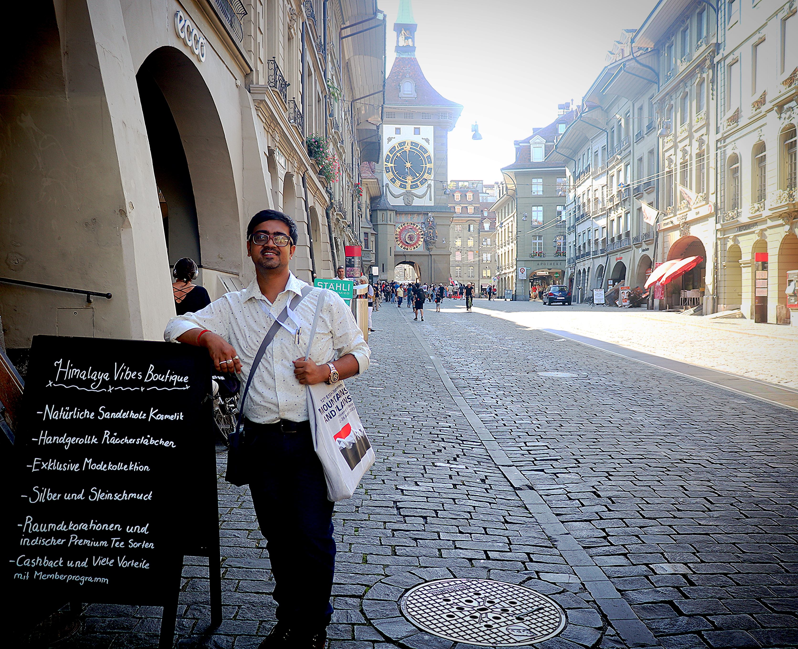

Short Bio-Note
Dr. Nirmalendu Maiti is a State Aided College Teacher in the Department of English at Mahishadal Raj College. His academic focus is at the intersection of Ecological Humanities and Anglophone Fiction, a topic he has explored in his PhD research at Vidyasagar University. His work delves into critical issues like environmental crises, postcolonial ecocriticism, and the representation of cultural spaces and identities. He also has a strong interest in Postcolonial Indian English Literature and Tribal Literature, contributing to a nuanced understanding of these vital fields through his published papers and conference presentations.
Work Experience
Guest Teacher
Department of English, Mahishadal Raj College
State Aided College Teacher (SACT I)
Department of English (UG & PG), Mahishadal Raj College
Academic Counsellor
Department of English, Netaji Open University
Academic Qualifications
| Degree | University / College / Board | Year |
|---|---|---|
| PhD | Vidyasagar University | 2026 |
| PGDTE [Distance] | English and Foreign Languages University (EFLU), Hyderabad | 2021 |
| PGCTE [Distance] | English and Foreign Languages University (EFLU), Hyderabad | 2018 |
| UGC-NET | University Grants Commission | 2018 |
| Chhattisgarh SET | CG Vyapam & Dept of Higher Education, CG | 2018 |
| Madhya Pradesh SET | MPPSC | 2017 |
| M.A. (English) (Gold Medalist) | Guru Ghasidas Vishwavidyalaya (A Central University) | 2016 |
| B.A. (Hons. in English) | Vidyasagar University | 2014 |
| Higher Secondary | WBCHSE | 2011 |
| Secondary | WBBSE | 2009 |
Publications (Journals & Edited Books)
Maiti, Nirmalendu. "Living Garbage and the 'Wasteland' of Edenic Andaman: 'Dumped' Communities and Disrupted Island Eco-space in Pankaj Sekhsaria's The Last Wave." Resistance: A Journal of Radical Environmental Humanities, Volume 12, Numbers 2-3, Spring-Fall 2025, edited by Dr. Sayan Dey, University of Nebraska Press, 2025, pp. 22-44. DOI: 10.1353/res.2025.a988440.
Maiti, Nirmalendu. "Local Natures and Regional Responses: A Psychogeographical Journey of Transforming Himalayan Eco-Space in Kiran Desai's The Inheritance of Loss." Regional Identities: Makers of Regional History, Society, Culture & Literature (Vol IV), Highbrow Publications, 2023, pp. 145-163.
De, Asis and Nirmalendu Maiti. "Urbanity and Transformation of Island Life: Jail, Jungle, and the Jarawa in Pankaj Sekhsaria's The Last Wave: An Island Novel." Ecology, Literature, and Culture, Atlantic, 2022, pp. 1-17.
Maiti, Nirmalendu. "Resistance and Resilience: Tribal History and Counter-Narrative in Sanjay Bahadur's Hul: Cry Rebel." LangLit, vol. 7, no. 2, 2020, pp. 149-155.
De, Asis and Nirmalendu Maiti. "Shadow Lines: The Border, the 'Other', and the Eco-literary in The Hungry Tide and The Great Derangement." Crossing the Shadow Lines: Essays on Amitav Ghosh, QuadRi, 2020, pp. 95-109.
Maiti, Nirmalendu and Asis De. "Exploitation of the Nature and the Transformation of the Wild in Stephen Alter's In the Jungles of the Night." New Academia, vol. VIII, no. II, 2019, pp. 308-318.
Maiti, Nirmalendu and Deepmala Mahato. "The Minion Mountain: Depiction of Life in Ruskin Bond's Roads to Mussoorie." Proceedings of the 37th International Conference on Mountain Literature, Kathmandu: Literary Association of Nepal, 2019, pp. 104-110.
Maiti, Nirmalendu and Joydev Maity. "The Last of Arthur's Knights and a Quest for Living Memories in Kazuo Ishiguro's The Buried Giant." LangLit, vol. 3, no. 1, 2016, pp. 720-725.
Maiti, Nirmalendu and Deepmala Mahato. "Globalization, Woman and Motherhood in Jhumpa Lahiri's 'Mrs. Sen's'." MATS Journal of Arts and Education, vol. 2, no. 1, 2015, pp. 118-121.
Seminars / Conferences / Symposia
Mountain-space and Question of Belonging in Kiran Desai's The Inheritance of Loss
Central University of Odisha, Koraput, India
Bonded Coolies and Sugar Colonies: Homecoming in Reuben Lachmansingh's A Dip at the Sangam
University of Lucknow, India
Disintegrated Mountains: Colonial Himalaya and Environmental Disjunction in Stephen Alter's In the Jungles of the Night
European Society for Environmental History, University of Bern, Switzerland
Contested Spaces: Transgenerational Attitude towards Nature in Kiran Desai's The Inheritance of Loss
Yonphula Centenary College, Royal University of Bhutan